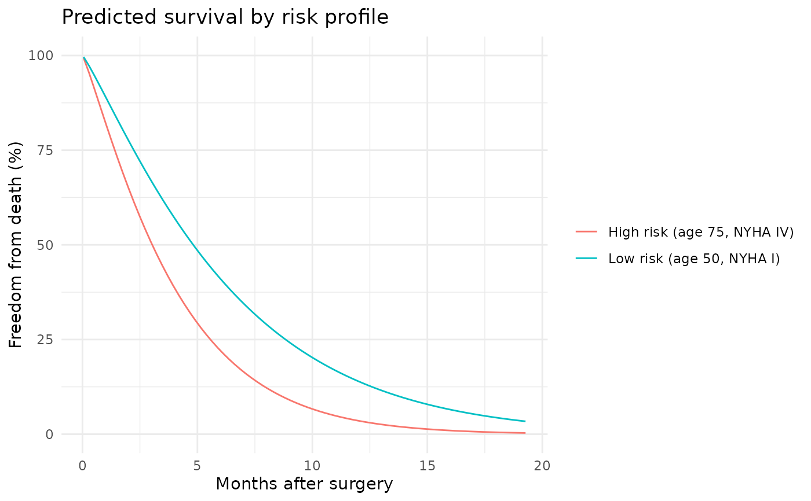

Produces prediction outputs from a hazard object. Supports multiple prediction
types including linear predictor, hazard, survival probability, and cumulative hazard.
Arguments
- object
A
hazardobject.- newdata
Optional matrix or data frame of predictors. For types requiring time (e.g., "survival", "cumulative_hazard"), newdata should include a
timecolumn, or time will be taken from the fitted object's data.- type
Prediction type:
"linear_predictor": Linear predictor eta = x*beta (not available for multiphase)"hazard": Instantaneous hazard. Single-distribution models return the hazard scale exp(eta); multiphase models return the additive hazard h(t|x) = sum_j mu_j(x) phi_j'(t) and so require time values (like"survival"/"cumulative_hazard").decomposeis not supported for"hazard"."survival": Survival probability S(t|x) = exp(-H(t|x))"cumulative_hazard": Cumulative hazard H(t|x) at event times
- decompose
Logical; if
TRUEand the model is multiphase, return a data frame with per-phase cumulative hazard contributions alongside the total. Ignored for single-distribution models. DefaultFALSE.- se.fit
Logical; if
TRUE, compute delta-method standard errors and confidence limits for each prediction. The return value becomes a data frame with columnsfit,se.fit,lower,upper. DefaultFALSE. CLs are computed on the log-hazard / log-cumhaz scale and on the log(-log(survival)) scale so lower/upper stay inside the valid range of each prediction type;linear_predictoruses symmetric natural-scale CLs. For multiphase models,se.fit = TRUEcombines withdecompose = TRUEwhentype = "cumulative_hazard": the result is a long data frame with one row per prediction time and component (componentin"total"plus each phase name) and columnsfit,se.fit,lower,upper. Per-phase CLs use only that phase's parameters, so they do not sum to the total CL. The combination is not available fortype = "survival"(per-phase survival is not additive).- level
Numeric confidence level in
(0, 1); default0.95. Only used whense.fit = TRUE.SAS draws narrower bands than this by default.
PROC HAZPREDtakes its width fromCLEVEL, whose default is0.68268948— documented in the macro source as "(1 sd)" — so itsT_ALPHAmultiplier is1to seven decimals (the literal is truncated) and the band is one standard error, 68.3%, not 95%. Reproducing a SAS figure at this function's default therefore yields a band about 1.96 times wider than the one being checked against, with no error and no warning on either side. Pass the SAS level explicitly to match:predict(fit, newdata, type = "survival", se.fit = TRUE, level = 2 * stats::pnorm(1) - 1, conf.type = "logit")The default is left at
0.95deliberately: it is the right R-side default, and silently adopting SAS's would make this method disagree with every other R modelling function.- conf.type
Transform for
type = "survival"confidence limits whense.fit = TRUE:"log-log"(default) builds them onlog(-log S)(thesurvival::survfitstandard);"logit"builds them onlogit(1 - S), reproducing SAS HAZARD'sHAZPREDsurvival limits. Other types are unaffected (hazard/cumulative-hazard use a log scale that already matches HAZPRED). Only used whense.fit = TRUE.- ...
Unused; included for S3 compatibility.
Value
When se.fit = FALSE (default), a numeric vector of predictions.
When se.fit = TRUE, a data frame with columns fit, se.fit, lower,
upper (delta-method point estimate, standard error, and confidence
limits at level). For multiphase type = "cumulative_hazard" with
decompose = TRUE, a long data frame (time, component, fit,
se.fit, lower, upper); with decompose = TRUE and se.fit = FALSE,
a wide data frame of per-phase contributions.
Details
For Weibull models with survival or cumulative_hazard predictions:
Cumulative hazard: H(t|x) = (mu*t)^nu * exp(eta)
Survival: S(t|x) = exp(-H(t|x))
Time values must be positive and finite. If newdata contains a time column,
it will be used; otherwise, the time vector from the fitted object is used.
For models fit with time_windows, predictions for type = "linear_predictor"
or "hazard" also require time values (via newdata$time or fitted-time fallback)
so window-specific coefficients can be selected.
See also
hazard() for model fitting,
summary.hazard() for model summaries,
hzr_phase() for multiphase temporal shapes.
vignette("prediction-visualization") for detailed prediction
workflows including decomposed hazard plots and patient-specific curves.
Examples
# -- Basic predictions ------------------------------------------------
set.seed(1)
fit <- hazard(time = rexp(50, 0.3), status = rep(1L, 50),
theta = c(0.3, 1.0), dist = "weibull", fit = TRUE)
predict(fit, type = "survival")
#> [1] 0.508625749 0.315282219 0.909696018 0.913862897 0.704168325 0.034467686
#> [7] 0.298065699 0.636038059 0.407908974 0.908750018 0.246010245 0.504910162
#> [13] 0.295257588 0.003735339 0.365120355 0.373239751 0.134603528 0.565496910
#> [19] 0.772817372 0.605435308 0.071059926 0.573095361 0.803254212 0.619494216
#> [25] 0.937287551 0.968102644 0.611481039 0.007482256 0.318360935 0.389856677
#> [31] 0.233113601 0.981613512 0.781964947 0.267633729 0.868412312 0.378586407
#> [37] 0.797810608 0.525129113 0.510608693 0.845711362 0.354685681 0.376220482
#> [43] 0.276772112 0.289908957 0.626551613 0.798137446 0.276488518 0.390851400
#> [49] 0.652425052 0.113618793
predict(fit, newdata = data.frame(time = c(1, 2, 5)),
type = "cumulative_hazard")
#> [1] 0.2243276 0.5135685 1.5350293
# -- Patient-specific survival curves ---------------------------------
set.seed(1001)
n <- 180
dat <- data.frame(
time = rexp(n, rate = 0.35) + 0.05,
status = rbinom(n, size = 1, prob = 0.6),
age = rnorm(n, mean = 62, sd = 11),
nyha = sample(1:4, n, replace = TRUE),
shock = rbinom(n, size = 1, prob = 0.18)
)
fit2 <- hazard(
survival::Surv(time, status) ~ age + nyha + shock,
data = dat,
theta = c(mu = 0.25, nu = 1.10, beta1 = 0, beta2 = 0, beta3 = 0),
dist = "weibull", fit = TRUE
)
new_patients <- data.frame(
time = c(0.5, 1.5, 3.0),
age = c(50, 65, 75),
nyha = c(1, 3, 4),
shock = c(0, 0, 1)
)
# Compute predictions from the clean covariate frame before adding columns
surv <- predict(fit2, newdata = new_patients, type = "survival")
cumhaz <- predict(fit2, newdata = new_patients, type = "cumulative_hazard")
new_patients$survival <- surv
new_patients$cumulative_hazard <- cumhaz
new_patients
#> time age nyha shock survival cumulative_hazard
#> 1 0.5 50 1 0 0.9493898 0.0519358
#> 2 1.5 65 3 0 0.7743077 0.2557859
#> 3 3.0 75 4 1 0.5047351 0.6837216
# \donttest{
# -- Grouped survival curves ---------------------------------------
if (requireNamespace("ggplot2", quietly = TRUE)) {
library(ggplot2)
t_grid <- seq(0.05, max(dat$time), length.out = 80)
profiles <- data.frame(
label = c("Low risk (age 50, NYHA I)",
"High risk (age 75, NYHA IV)"),
age = c(50, 75),
nyha = c(1, 4),
shock = c(0, 1)
)
curve_list <- lapply(seq_len(nrow(profiles)), function(i) {
nd <- data.frame(
time = t_grid,
age = profiles$age[i],
nyha = profiles$nyha[i],
shock = profiles$shock[i]
)
nd$survival <- predict(fit2, newdata = nd, type = "survival") * 100
nd$profile <- profiles$label[i]
nd
})
curve_df <- do.call(rbind, curve_list)
ggplot(curve_df, aes(time, survival, colour = profile)) +
geom_line() +
scale_y_continuous(limits = c(0, 100)) +
labs(x = "Months after surgery",
y = "Freedom from death (%)",
title = "Predicted survival by risk profile",
colour = NULL) +
theme_minimal()
}

# }
# \donttest{
# -- Multiphase predictions with decomposition --------------------
set.seed(42)
n <- 200
dat <- data.frame(
time = rexp(n, rate = 0.25) + 0.01,
status = rbinom(n, size = 1, prob = 0.65)
)
fit_mp <- hazard(
survival::Surv(time, status) ~ 1,
data = dat,
dist = "multiphase",
phases = list(
early = hzr_phase("cdf", t_half = 0.5, nu = 2, m = 0,
fixed = "shapes"),
late = hzr_phase("cdf", t_half = 5, nu = 1, m = 0,
fixed = "shapes")
),
fit = TRUE,
control = list(n_starts = 5, maxit = 1000)
)
t_grid <- seq(0.01, max(dat$time) * 0.9, length.out = 100)
nd <- data.frame(time = t_grid)
# Overall survival
predict(fit_mp, newdata = nd, type = "survival")
#> early.log_mu early.log_mu early.log_mu early.log_mu early.log_mu early.log_mu
#> 0.9991035 0.9506796 0.9308166 0.8914476 0.8319970 0.7661086
#> early.log_mu early.log_mu early.log_mu early.log_mu early.log_mu early.log_mu
#> 0.7030015 0.6464731 0.5973335 0.5551220 0.5189605 0.4879204
#> early.log_mu early.log_mu early.log_mu early.log_mu early.log_mu early.log_mu
#> 0.4611598 0.4379618 0.4177322 0.3999851 0.3843242 0.3704264
#> early.log_mu early.log_mu early.log_mu early.log_mu early.log_mu early.log_mu
#> 0.3580274 0.3469101 0.3368952 0.3278337 0.3196013 0.3120935
#> early.log_mu early.log_mu early.log_mu early.log_mu early.log_mu early.log_mu
#> 0.3052220 0.2989119 0.2930992 0.2877290 0.2827541 0.2781333
#> early.log_mu early.log_mu early.log_mu early.log_mu early.log_mu early.log_mu
#> 0.2738313 0.2698167 0.2660625 0.2625445 0.2592416 0.2561350
#> early.log_mu early.log_mu early.log_mu early.log_mu early.log_mu early.log_mu
#> 0.2532080 0.2504458 0.2478350 0.2453638 0.2430213 0.2407979
#> early.log_mu early.log_mu early.log_mu early.log_mu early.log_mu early.log_mu
#> 0.2386849 0.2366744 0.2347592 0.2329327 0.2311890 0.2295226
#> early.log_mu early.log_mu early.log_mu early.log_mu early.log_mu early.log_mu
#> 0.2279286 0.2264024 0.2249398 0.2235370 0.2221903 0.2208966
#> early.log_mu early.log_mu early.log_mu early.log_mu early.log_mu early.log_mu
#> 0.2196527 0.2184559 0.2173036 0.2161933 0.2151228 0.2140900
#> early.log_mu early.log_mu early.log_mu early.log_mu early.log_mu early.log_mu
#> 0.2130930 0.2121300 0.2111993 0.2102992 0.2094283 0.2085852
#> early.log_mu early.log_mu early.log_mu early.log_mu early.log_mu early.log_mu
#> 0.2077686 0.2069773 0.2062101 0.2054659 0.2047438 0.2040428
#> early.log_mu early.log_mu early.log_mu early.log_mu early.log_mu early.log_mu
#> 0.2033619 0.2027003 0.2020572 0.2014319 0.2008235 0.2002315
#> early.log_mu early.log_mu early.log_mu early.log_mu early.log_mu early.log_mu
#> 0.1996552 0.1990940 0.1985473 0.1980145 0.1974951 0.1969886
#> early.log_mu early.log_mu early.log_mu early.log_mu early.log_mu early.log_mu
#> 0.1964946 0.1960125 0.1955420 0.1950827 0.1946341 0.1941959
#> early.log_mu early.log_mu early.log_mu early.log_mu early.log_mu early.log_mu
#> 0.1937677 0.1933492 0.1929401 0.1925400 0.1921487 0.1917659
#> early.log_mu early.log_mu early.log_mu early.log_mu
#> 0.1913913 0.1910246 0.1906656 0.1903140
# Per-phase decomposed cumulative hazard
decomp <- predict(fit_mp, newdata = nd,
type = "cumulative_hazard", decompose = TRUE)
head(decomp)
#> time total early late
#> 1 0.0100000 0.0008968648 0.0008968648 5.301151e-151
#> 2 0.3177112 0.0505781411 0.0505463804 3.176066e-05
#> 3 0.6254224 0.0716929907 0.0648891435 6.803847e-03
#> 4 0.9331336 0.1149086283 0.0726065065 4.230212e-02
#> 5 1.2408448 0.1839263936 0.0776678638 1.062585e-01
#> 6 1.5485560 0.2664313824 0.0813349626 1.850964e-01
# }